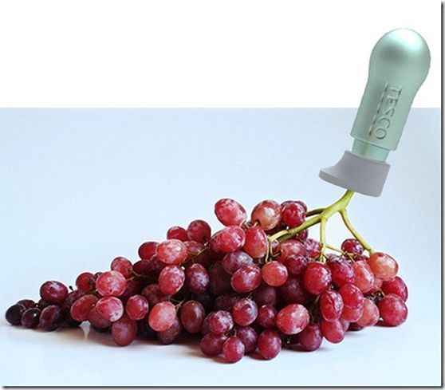
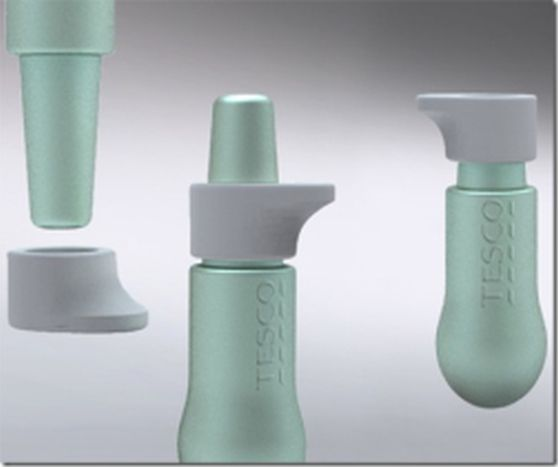
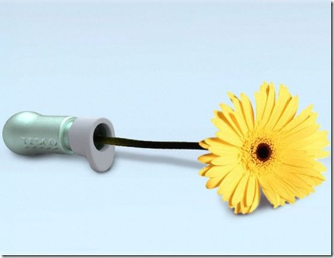
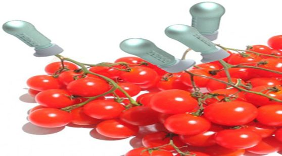

Keep Your Vegetables Fresh

Keep Fresh Vegetables
The innovative plant perf concept aims to deliver fresh fruits and vegetables to the consumers which eliminate using chemicals that are harmful for health. The plants are get attached with the device right after being cut from the field to get the nutrients from the perf. The body of the device is made from corn starch plastic and features three main parts, the main body, bottle top and nutritious liquid. The long top end of the bottle remains locked when the farmer collects it and during harvesting, the farmer cuts the fruits and insert the stem inside the bottle and locks it by pulling the top upward. Not only fruits, it can also be used to keep flowers fresh for longer period of time according to the user’s need.
Some pictures of The Device


